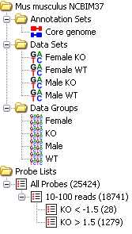
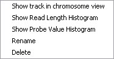
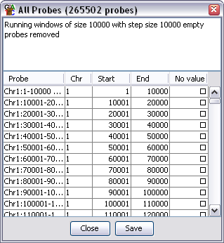

The data view gives you a quick overview of your DataSets, DataGroups, Replicate Sets, Annotation sets and ProbeLists.

The view consists of a set of folders which can be expanded or collapsed either by double clicking them or by clicking on the little + or - symbols which may appear next to them.
As well as seeing your DataSets, DataGroups and Replicate Sets you can also use the data view to perform operations on them.
If you click on any DataStore entry in the data view you will see it become highlighted. If that DataStore is currently visible in the chromosome view then it will have a red line at the top and bottom of the track so you can quickly see where it is.
If you right click (or Apple+click) on any DataStore you will see a popup menu of options appear.

The options are:
The annotation sets folder will initially only show you an entry for the core genome annotations which come with each imported SeqMonk genome. If you Import Extra Annotation then this will show up in this folder.
Right-clicking on an entry in this folder brings up a popup menu with the following options:
The set of probe lists will initially be empty until you have created some probes and run one or more filters to generate some lists. The lists appear in a heirarchical tree representing the order in which they were generated.
If you select a probe list then your chromosome view will change to show only the probes which are present in that list. If you want to change back to seeing all probes again you should click on the All Probes list at the root of the tree.
As with the DataStores you can right-click (or Apple+click) on a probe list to bring up a popup menu of options. These allow you rename or delete this list. There is also an option to view the list, you can do this either by selecting this option from the menu, or by double clicking on the list. This will generate a dialog which looks like this:

This is a simple dialog which gives you minimal information about the probes in your list. But will tell you what filter options were used to create the list. In the case of the all probes list you will be told what options were used to create the initial probe set. You can sort the dialog by clicking on the column headers and can view any probe in the chromosome view by double clicking on any row of the table.
For a more informative view of a probe list you might prefer to use the Annotated Probe Report or the Probe Group Report.